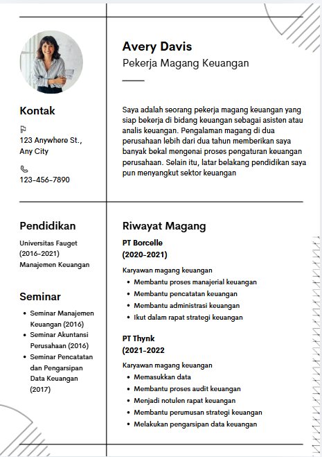
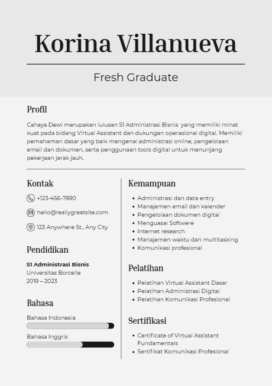
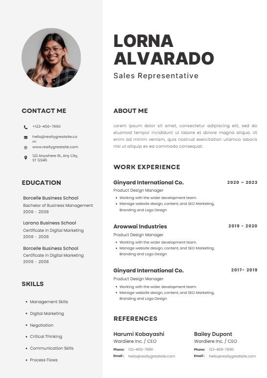

CV Magang
Ringkas, fokus pada proyek kuliah, organisasi, dan skill yang relevan.
Mahasiswa semester akhirJasa CV profesional untuk awal kariermu
Bantu mahasiswa dan fresh graduate Indonesia membuat CV yang jelas, ATS-friendly, dan terlihat profesional untuk magang, beasiswa, maupun kerja pertama.
Fresh Graduate Akuntansi
Lulusan akuntansi dengan pengalaman organisasi, magang finance, dan kemampuan analisis data dasar.
Portfolio
Setiap CV disusun sesuai target: magang, kerja pertama, beasiswa, atau program trainee.

Ringkas, fokus pada proyek kuliah, organisasi, dan skill yang relevan.
Mahasiswa semester akhir
Menonjolkan pengalaman magang, achievement, sertifikat, dan kesiapan kerja.
Entry level
Lebih akademik, kuat di prestasi, kegiatan sosial, dan motivasi pengembangan diri.
Kampus & scholarshipPaket Harga
Harga transparan, cocok untuk kebutuhan mahasiswa dan fresh graduate.
Rp5K
Untuk kamu yang sudah punya CV dan butuh masukan profesional.
Rp8K
CV baru dari nol dengan format rapi dan bahasa profesional.
Rp12K
Paket lengkap untuk membangun personal branding awal karier.
Order Mudah
Isi data berikut agar kami bisa memahami kebutuhanmu. Setelah submit, kamu akan diarahkan ke WhatsApp untuk lanjut konsultasi dan pengiriman dokumen.
Testimoni
"CV saya jadi jauh lebih jelas dan profesional. Dua minggu setelah update, saya dipanggil interview magang."
"Awalnya bingung menulis pengalaman organisasi. Dibantu supaya hasilnya lebih terukur dan enak dibaca."
"Prosesnya cepat, komunikasinya jelas, dan file akhirnya rapi. Cocok untuk yang baru pertama kali apply kerja."
FAQ
Masih ragu? Beberapa jawaban ini biasanya membantu sebelum order.
Estimasi pengerjaan 1-2 hari kerja setelah data lengkap diterima.
Ya. Struktur, keyword, dan format dibuat agar tetap mudah dibaca sistem ATS dan HRD.
Bisa. Kami bantu mengolah pengalaman organisasi, proyek kuliah, volunteer, lomba, dan sertifikat agar tetap bernilai.
Paket CV Profesional dan CV + LinkedIn sudah termasuk 1x revisi minor.
Konsultasi awal gratis. Ceritakan target posisi kamu, kami bantu arahkan formatnya.
Mulai Order